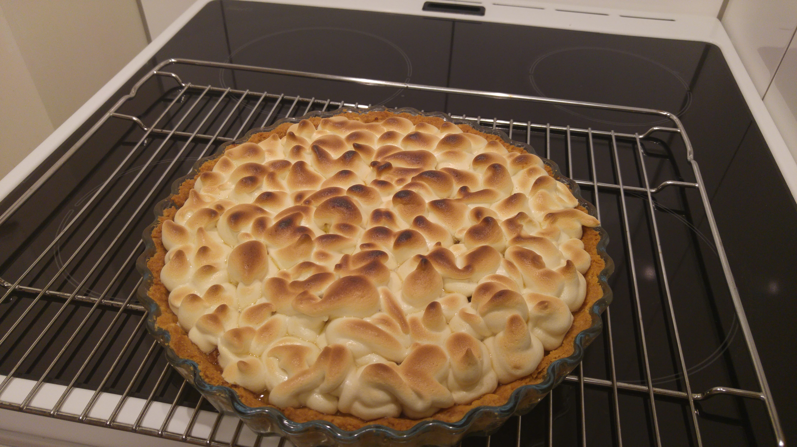

Dans un bol, mélanger les jaunes d'œufs et le sucre. Dans une casserole, mettre l'eau, le jus de citron et la maïzena. Faire chauffer la préparation à petit feu et en mélangeant avec une cuillère en bois.
Lorsque celui-ci commence à chauffer, verser petit à petit ce mélange sur le mélange oeuf-sucre tout en mélangeant avec la cuillère.
Remettre le tout dans la casserole et cuire à petit feu en remuant le mélange. La crème est prête lorsque celle-ci nappe la cuillère. Retirer la casserole du feu, laisser refroidir quelques instants puis ajouter le beurre. Bien mélanger. Réserver. La crème est prête !
Préchauffer le four à 180°C. Dans un récipient, mettre la farine, les sucres et la pincée de sel. Mélanger le tout. Ajouter le beurre en dés. Bien mélanger. La préparation est au stade sablée. Ajouter le jaune d'œuf. Bien mélanger pour pouvoir obtenir une pâte. Sur une feuille de cuisson, étaler cette pâte à l'aide d'un rouleau pour environ 9mm d'épaisseur. Ensuite disposez la sur votre moule à tarte classique sans enlever la feuille de cuisson).
Couper les bords à ras le bord du moule. Piquer la pâte à l'aide d'une fourchette et mettre par dessus une autre feuille de cuisson. Mettre des poids au milieu, des graines séchées, ou du gros sel pour éviter que le fond de la pâte ne soit difforme. Enfourner au four toujours à 180°C pendant 20 min. Au bout de 20 min, retirer la feuille de cuisson avec les poids (ou autre) et remettre au four pour 10 min de plus avec une feuille de cuisson par dessus pour ne pas que celle-ci reprenne de la couleur. Laisser refroidir. La fond de tarte est prêt !
Verser la crème au citron sur le fond de tarte. Avec une spatule, caresser la crème pour que le dessus soit bien régulier.
Dans un bol, mettre les blanc d'oeufs avec la pincée de sel. Monter le tout en neige très ferme. Puis ajouter, tout en mélangeant, le sucre petit à petit pour que la meringue soit homogène. La meringue est prête lorsqu'elle est satinée. Remplir une poche à douille avec cette préparation (avec l'embout de votre choix) et laissez libre cours à votre imagination (en pointe, en spirale, ...).
A l'aide d'un chalumeau, faites prendre des couleurs à la meringue.
Si vous n'avez pas de chalumeau, rallumer le four sur la position grill et à chaleur fixe à basse température. Remettre votre tarte au four pendant 2-3 min.Les extrémités de la meringue seront colorées. La tarte est prête !